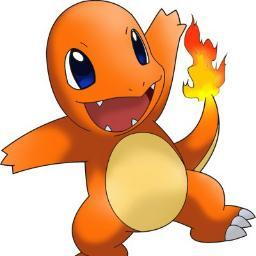

Informacion pokemon
charmander

- Nombre: charmander
- Tipo: fuego
- Peso: 6.9 kg
- Altura: 0.6 m
- Poder: 60
- Debilidad: agua
- Descripcion: El fuego que arde en la boca es una llama que arde con toda la vida.
- la página del pokedex
Bulbasaur

- Nombre: bulbasaur
- Tipo: planta
- Peso: 6.9 kg
- Altura: 0.6 m
- Poder: 60
- Debilidad: fuego
- Descripcion: Bulbasaur es un Pokémon cuadrúpedo de color verde y manchas más oscuras de formas geométricas. Su cabeza representa cerca de un tercio de su cuerpo. En su frente se ubican tres manchas que pueden cambiar dependiendo del ejemplar.
- la página del pokedex
Squirtle

- Nombre: squirtle
- Tipo: agua
- Peso: 6.9 kg
- Altura: 0.6 m
- Poder: 60
- Debilidad: planta
- Descripcion: Esta pequeña tortuga Pokémon jala su largo cuello hacia su caparazón para lanzar increíbles ataques de agua con sorprendente alcance y exactitud.ejemplar.
- la página del pokedex